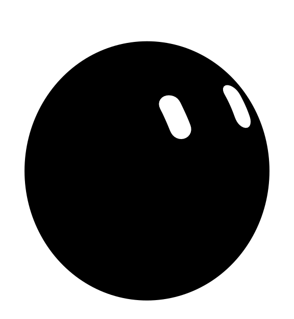
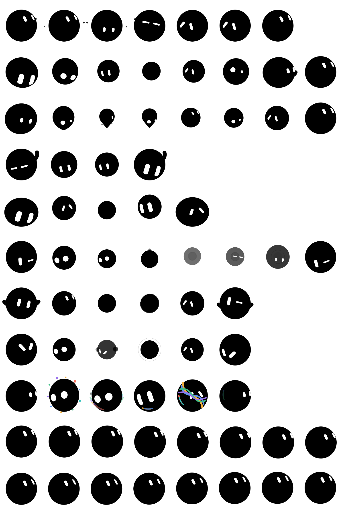

Full-range character study
One little bot.
A lot going on.
Compare both installable variants in sync, inspect all 39 character-state snapshots in the separate Character Lab, and move through the gaze field to make both pets follow you in 22.5° steps.
r0 · c0
grok-bot-dark
grok-bot-light
Grok Bot motion bench
All 14 body-morph effects, moving.
Lossless 60 fps studies driven by the character's activation spring. Each loop shows onset, sustained motion, and spring release; the installable Codex rows above select readable frames from this richer character vocabulary.
grok-bot-dark

grok-bot-light

whirl · loading · exact spring onset, sustained sample, and spring release
Active atlas view
1536 × 2288 transparent atlas
Dark Codex + Light Codex · synchronized comparison
Eight columns, eleven rows, 192 × 208 pixels per cell.
grok-bot-dark

grok-bot-light
